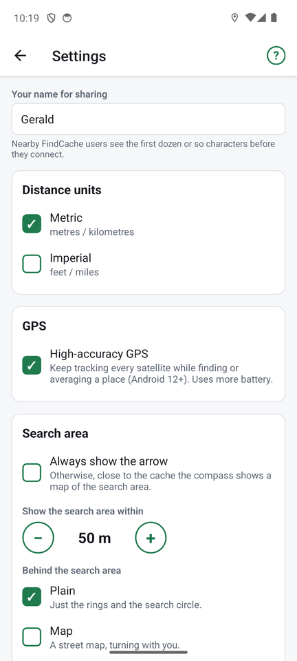

Settings

Open Settings from the top of the places list, or from the ⚙ at the top of any other screen. Changes take effect straight away; Save keeps the sharing name.
Your name for sharing
What nearby FindCache users see when you share. It starts as your phone's name, and you can change it to anything. Others see about the first dozen characters before they connect.
Distance units
Metric (metres, kilometres) or Imperial (feet, miles). The search-area setting converts when you switch.
GPS
High-accuracy GPS tracks every satellite the phone can hear, instead of a subset (Android 12 and later). It gives the best fix while the compass or averaging is open, and uses more battery. On by default.
Search area
- Always show the arrow: never switch to the search-area map.
- Show the search area within: how close you must be (50 m by default; use − and +) before the middle of the compass becomes the search-area map.
- Behind the search area: Plain (just the rings and shaded circle), Map (a street map that turns with you) or Satellite (aerial pictures, United States only; the street map elsewhere).
Found places
- Off: do not track finds.
- Once per place: marking found again updates the date and comment (default).
- Keep a log: every find is kept, with its date and comment.
Switching to Once per place keeps your log and shows the latest find.
Sharing history
How long to remember who downloaded your shared places: 7 days, 30 days, 90 days (default), 1 year or forever. Old entries are cleaned up when the Share or history screen opens.
← Import and export ↑ FindCache overview Help and troubleshooting →